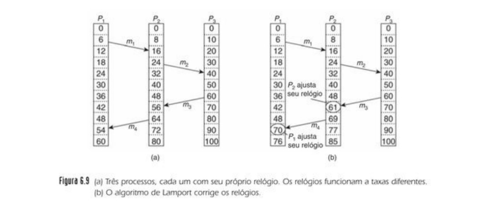

Universidade do Estado de Mato Grosso
Campus Cáceres
Faculdade de Ciências Exatas
Bacharelado em Ciência da Computação
Sistemas Distribuídos
Capítulo 6 - Sincronização (Parte 2)
Leonardo Luan Martins da Silva
22 de abril de 2019
Relógios Lógicos
- Com relógios físicos, existe uma sincronização com o tempo real.
- No entanto, em alguns casos pode ser suficiente que cada nó de um SD concorde com uma hora corrente, sem que essa seja a mesma que a hora real.
Relógios Lógicos de Lamport
- Para sincronizar relógios lógicos, Lamport definiu uma relação denominada acontece antes.
- A expressão a → b é lida como ‘a acontece antes de b’ e significa que todos os processos concordam que primeiro ocorre um evento a, e depois, um evento b.
- A relação ‘acontece antes’ pode ser observada em duas situações:
- Se a e b são eventos do mesmo processo, e a ocorre antes de b, então a → b é verdadeira.
- E a é o evento de uma mensagem sendo enviada por um processo, e b é o evento da mensagem sendo recebida por outro processo, então a → b também é verdadeira. Uma mensagem não pode ser recebida antes de ser enviada, visto que ela leva uma quantidade de tempo finita, diferente de zero, para chegar.
- A relação ‘acontece antes’ é transitiva, portanto,
se a → b e b → c, então a → c.
- O que precisamos é um modo de medir uma noção de tempo tal que, para cada evento a, possamos designar um valor de tempo C(a) com o qual todos os processos concordam.
- Esses valores de tempo precisam ter a propriedade de se a → b, então C(a) < C(b).
Funcionamento do Algoritmo de Lamport
Considere os três processos apresentados na Figura 6.9(a)

- Os processos executam em máquinas diferentes, cada um com seu próprio relógio, que funciona a sua própria velocidade.
- Como podemos ver na figura, quando o relógio pulsa 6 vezes no processo P1, pulsou 8 vezes no processo P2 e 10 vezes no processo P3.
- Cada relógio funciona a uma taxa constante, mas as taxas são diferentes devido às diferenças nos cristais.
- No tempo 6, o processo P1 envia a mensagem m1 ao processo P2.
- O tempo que essa mensagem leva para chegar depende do relógio no qual você se baseia.
- Seja como for, o relógio no processo P2 marca 16 quando a mensagem chega.
- Se a mensagem transportar com ela o tempo de início, 6, o processo P2 concluirá que ela levou 10 pulsos para fazer sua jornada.
- Segundo esse raciocínio, a mensagem m2 de P2 a P3 leva 16 pulsos
- Agora considere a mensagem m3. Ela sai do processo P3 em 60 e chega em P2 em 56.
- Da mesma maneira, a mensagem m4 de P2 e P1 sai em 64 e chega em 54. Esses valores são claramente implausíveis. É essa situação que deve ser evitada.
- A solução de Lamport resulta diretamente da relação ‘acontece antes’. Visto que m3 saiu em 60, ela deve chegar em 61 ou mais tarde.
- Portanto, cada mensagem transporta o tempo de envio conforme o relógio do remetente.
- Quando uma mensagem chega e o relógio do receptor mostra um valor anterior ao tempo em que a mensagem foi enviada, o receptor adianta seu relógio para ficar uma unidade a mais do tempo de envio.
Na Figura 6.9(b) vemos que, agora, m3 chega em 61. De modo semelhante, m4 chega em 70.
- Para implementar o relógio lógico de Lamport, cada processo Pi mantém um contador local Ci. Esses contadores são atualizados conforme as etapas apresentadas a seguir:
- Antes de executar um evento (isto é, enviar uma mensagem pela rede, entregar uma mensagem a uma aplicação, ou qualquer outro evento interno), Pi executa Ci ← Ci + 1.
- Quando o processo Pi envia uma mensagem m a Pj, ajusta a marca de tempo de m, ts(m), para igual a Ci após ter executado a etapa anterior.
- Ao receber uma mensagem m, o processo Pj ajusta seu próprio contador local para Cj ← max(Cj, ts(m)) e, depois disso, executa a primeira etapa a entrega a mensagem a aplicação.
Aguardem a chamada!
Até a próxima aula!